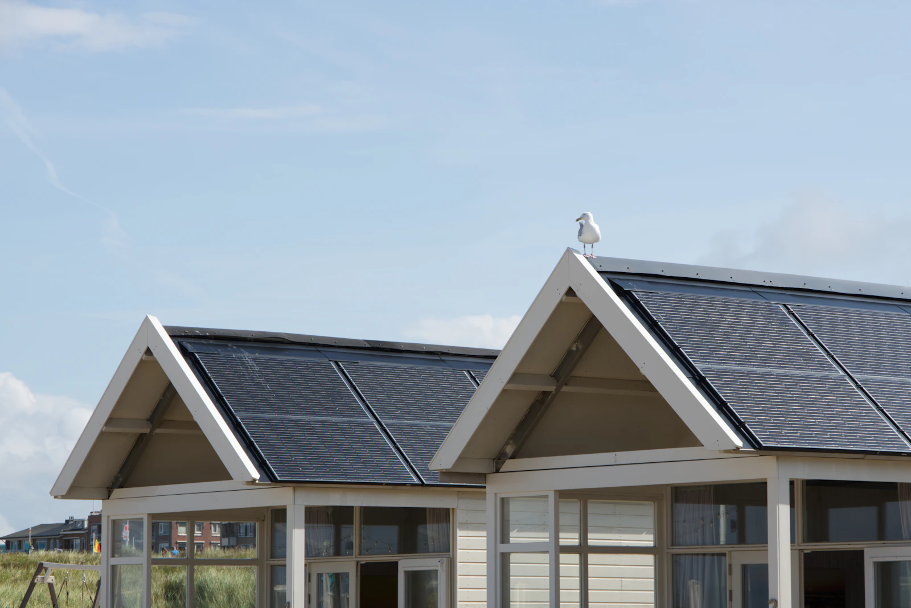
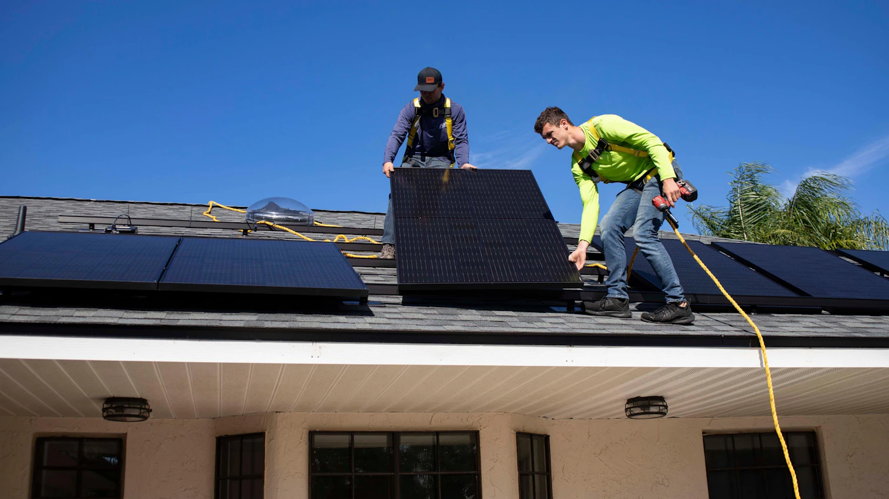

High energy output
A practical capacity for many medium-sized household energy profiles.
RESIDENTIAL SOLAR SYSTEM
A smart and affordable solar solution for Australian homes. A 6.6kW system is commonly considered for medium-sized households and may help reduce electricity purchased from the grid.

*Performance depends on location, orientation, shading, panel efficiency, system design and weather conditions.
SYSTEM INSIGHTS
A 6.6kW solar system is a rooftop solar array with a combined panel capacity of approximately 6.6 kilowatts. During daylight, panels capture sunlight and generate DC electricity, which an inverter converts into usable AC power for the home.
This size is commonly selected by Australian homeowners with medium household energy needs. The right system depends on usage patterns, roof space, local conditions and the amount of energy a property can use while the sun is shining.
SYSTEM ADVANTAGES
Features and equipment are confirmed during the system design and property assessment.
A practical capacity for many medium-sized household energy profiles.
Panel and inverter selection can be matched to your priorities and property.
A compatible battery may be considered as part of a future-ready design.
Solar can reduce reliance on purchased grid electricity over time.
Many modern inverters support performance monitoring, depending on model.
Installation requirements are assessed around your roof and electrical setup.
PANEL CONFIGURATION
The number of panels depends on the wattage of the selected panel model.
| Panel wattage | Approximate count | Calculation |
|---|---|---|
| 440W | Approximately 15 panels | 15 × 440W = 6.6kW |
| 415W | Approximately 16 panels | 16 × 415W = 6.64kW |
| 370W | Approximately 18 panels | 18 × 370W = 6.66kW |
Final panel count depends on the selected panel model, roof area, layout, shading, orientation and system design.
INVESTMENT & COSTS
There is no single installed price for every property. The final installed price will depend on your property, equipment selection, eligibility for incentives and installation requirements.
EXPECTED GENERATION
A properly designed system may generate approximately 22–28kWh per day under suitable conditions, or around 8,000–10,000kWh annually. These are estimates, not guarantees.
Actual output varies with Australian location, roof orientation and angle, shading, weather, panel and inverter efficiency, and system maintenance.
Illustrative daily output range
Illustration only; site conditions change production.
SYSTEM BENEFITS

PERFORMANCE INFORMATION
OUR SERVICE COMMITMENT
We make the solar journey clear, from consultation and system design to professional installation and ongoing support.
System options are considered around your property, energy needs and goals.
Planning and installation are approached with attention to safety, performance and long-term value.
Our team remains available to explain options and support you through the solar journey.
READY TO EXPLORE SOLAR?
Speak with the Esteem Energy team for a personalised solar assessment and quotation based on your home, roof, energy use and location.
YOUR QUESTIONS ANSWERED
Concise answers about 6.6kW solar system sizing, output, installation and batteries.